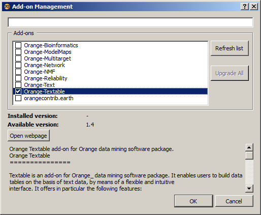

Windows installation¶
- On the Orange 2.7 download page, download the software installer by following the Orange 2.7 installer for Windows link.
- Execute the Orange Canvas installer and click Ok at each stage (including the stages of the installation of Python modules).
- Start Orange Canvas then select menu Options > Add-ons… (see figure 1).

Figure 1: Opening the Add-ons management dialog in Orange Canvas.
- In the window which has opened (see figure 2), click on Refresh list, check the Orange-Textable box then the Ok button (twice).

Figure 2: Orange Textable marked for installation.
If step 4 was carried out correctly, the Orange Textable tab appears in the list on the left of the window of Orange Canvas after having exited and restarted the program.
Only if step 4 was not correctly carried out:
- Go to PyPI to download the Orange Textable Windows installer (MS Windows installer, .exe file).
- Execute the Orange Textable installer and click on Ok for each stage.
If install was completed without issues but nothing happens when trying to launch the application:
Try to follow the steps described here.